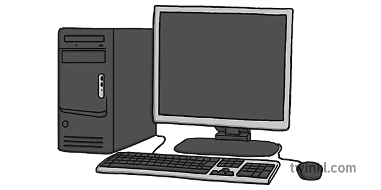

hier ga ik het hebben over de computer

Nu ga ik een goede uitleg geven!
1. Invoer
Invoer is de eerste stap waarbij gegevens of instructies naar de computer worden gestuurd. Dit gebeurt via invoerapparaten zoals toetsenborden, muizen, scanners, microfoons en camera's. Deze apparaten nemen de fysieke handelingen of analoge signalen van de gebruiker en zetten ze om in digitale signalen die de computer kan begrijpen.
2. verwerking
Na de invoer worden de gegevens naar de centrale verwerkingseenheid (CPU) gestuurd. De CPU, ook wel de hersenen van de computer genoemd, voert bewerkingen uit op de gegevens volgens de instructies van programma's en software. De CPU bevat een reeks van instructies, opgeslagen in de vorm van binaire code (0's en 1's), die bepalen welke bewerkingen moeten worden uitgevoerd. De CPU maakt gebruik van het werkgeheugen (RAM) om tijdelijk gegevens en instructies op te slaan tijdens de verwerking.
3. uitvoer
Uitvoer is het resultaat van de verwerkingsstap. Nadat de gegevens zijn verwerkt, worden de resultaten naar uitvoerapparaten gestuurd zodat de gebruiker ze kan zien of gebruiken. Dit kan een beeldscherm, printer, luidspreker of een ander apparaat zijn dat de verwerkte gegevens in een bruikbare vorm aan de gebruiker presenteert. Uitvoer kan visueel, auditief of fysiek zijn, afhankelijk van het uitvoerapparaat.
4. Opslag
Opslag verwijst naar het langdurig bewaren van gegevens en informatie. Dit gebeurt op opslagapparaten zoals harde schijven, solid-state drives (SSD's), USB-sticks, en optische schijven (CD's, DVD's). Opslag kan zowel voor korte termijn (zoals RAM, dat snel toegankelijk is voor de CPU) als voor lange termijn zijn (zoals harde schijven, die grote hoeveelheden gegevens permanent kunnen bewaren).
Voorbeeld!
Invoer: Je typt een tekst in een tekstverwerkingsprogramma met behulp van een toetsenbord.
Verwerking: De CPU verwerkt elke toetsaanslag, toont de letters op het scherm en voert bewerkingen uit zoals het formatteren van de tekst.
Uitvoer: De bewerkte tekst wordt weergegeven op het beeldscherm, zodat je kunt zien wat je hebt getypt en bewerkt.
Opslag: Als je de tekst opslaat, wordt deze op de harde schijf of een ander opslagmedium bewaard, zodat je later weer toegang hebt tot je document.
Dit is dus hoe een computer